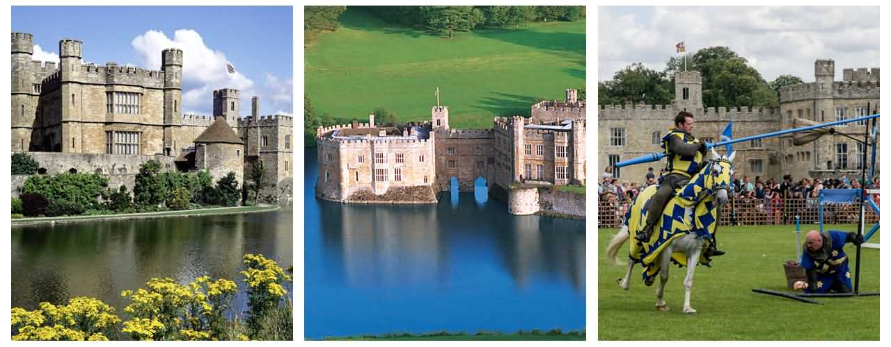

阿什福德城堡，是爱尔兰知名的古城堡，它与阿代尔庄园、 路特尔斯顿城堡、布拉尼城堡、比尔城堡庄园和本拉提城堡，合称为爱尔兰六大神秘古堡。 1288年，英国人德·伯格家族(de Burgo family)创建了阿什福德城堡。阿什福德城堡是个如童话般的地方，在那里无论人和物都被予以皇家待遇。
在现代这个城堡已经成为五星级宾馆，门面仍然保持700年前的原样，内部奢华，外部看上去却只有稳重和朴实。价格488美元一晚。这里也是007的扮演者皮尔斯布鲁斯南（pierce brosnan）结婚的地方。
利兹堡位于英格兰肯特郡梅德斯顿以东4英里处的梦幻的伦河（LEN）河谷中。整个城堡位于一个小湖的中央秀美的河水，显得十分优雅。最早的利兹堡建造于公元857年，是在木结构城堡基础上建造的，当时名为Esdeles。 清晨的阳光，照亮了肯特乡间的宁静湖面，也唤醒了湖边美丽的城堡。难以想象，这座城堡已经有上千年的历史。它曾是英国皇室的乡间别墅，深受王后们的宠爱，因此被称为“王后的城堡”，它在英国历史和建筑史上享有盛名，因此又被誉为“城堡中的王后”。
现在的整个利兹城堡主要分为两个整体，一部分是城堡的建筑，保存着中世纪时候作为防御工事的建筑，城堡的主体是主人活动的主要场所，卧室、会客厅、宴会厅、图书室等都对公众开放，特别是都铎样式的宴会厅中装饰华丽，至今依然带着亨利八世时的皇家气派， 墙上依然挂着精美的壁毯，还有美仑美奂的家具以及各类艺术品和收藏品，精致的壁炉上悬挂着亨利八世的画像。 另一部分是后来逐渐增建的那一部分，主要是后来的城堡主人根据自己的喜好而增建的，位于城堡所处湖泊的东侧，包括巨大的迷宫、鸟舍、草药园、观景台。
伦敦塔的官方名称是“女王陛下的宫殿与城堡(Her Majesty's Palace and Fortress,The Tower of London)，伦敦塔”，虽然将其作为宫殿居住的最后一位统治者已是几世纪前的詹姆士一世（1566年至1625年）。伦敦塔曾作为堡垒、军械库、国库、铸币厂、宫殿、天文台、避难所和监狱，特别关押上层阶级的囚犯。最后的这一用途产生一条短语"sent to the Tower”，意思是“入狱”。 伊丽莎白一世在她姐姐玛丽一世统治时曾在此入狱一段时间；伦敦塔最后一次作为监狱使用是在第二次世界大战期间，关押鲁道夫·赫斯。1988年被列为世界文化遗产。
具有罗马人建筑风格特点的白塔，是影响整个英国建筑风格的巨大建筑物。伦敦塔是威廉沿泰晤士河建造的，目的是为了保护伦敦，并宣称此地是他的领土。伦敦塔是围绕白塔建造的一个十分有历史意义的城堡，也是王室权力的象征。(世界遗产委员会评价)
若瑟兰坐落在乌斯河（Ouest River）河谷，是布列塔尼最有名望的家族之一——侯安家族的居住地。乌斯河上城堡的冷酷高墙藏起了精美的建筑、雕刻以及可爱的内庭。这座有着近千年历史的古镇，以悠久的历史、不同时期的建筑，以及一座美丽的教堂而闻名。